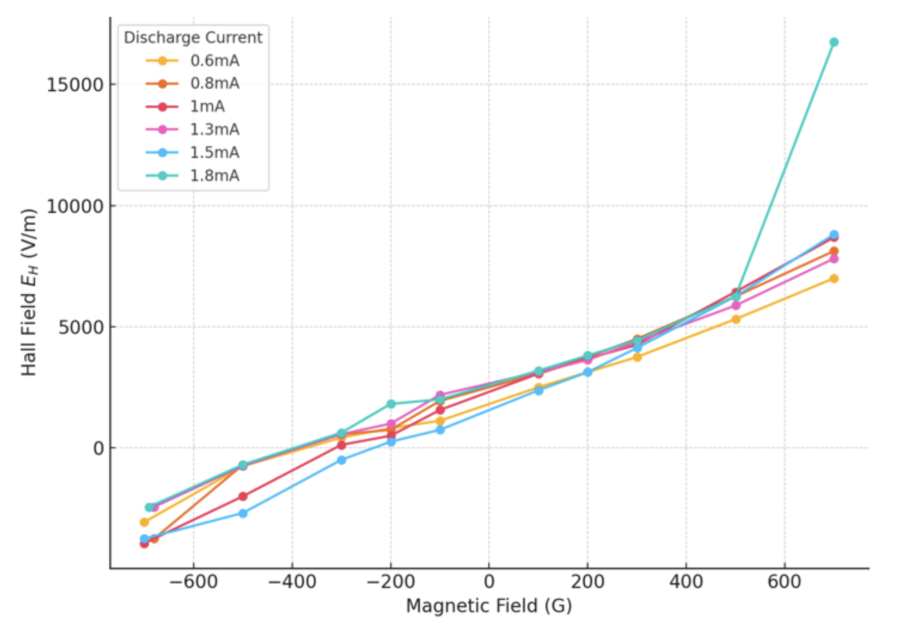
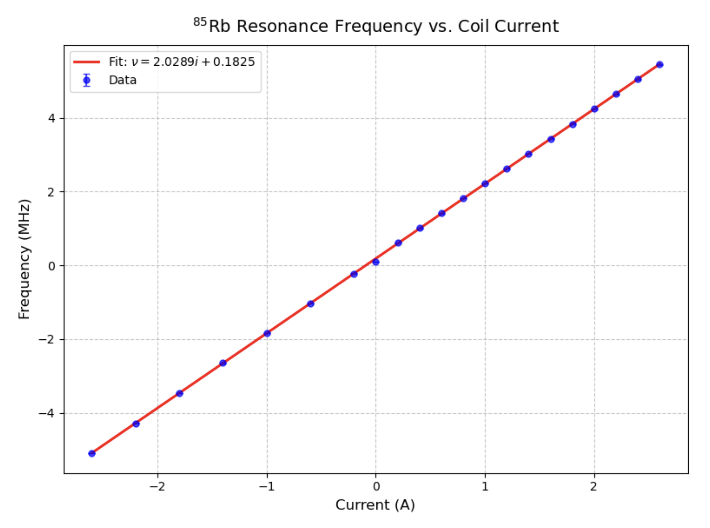
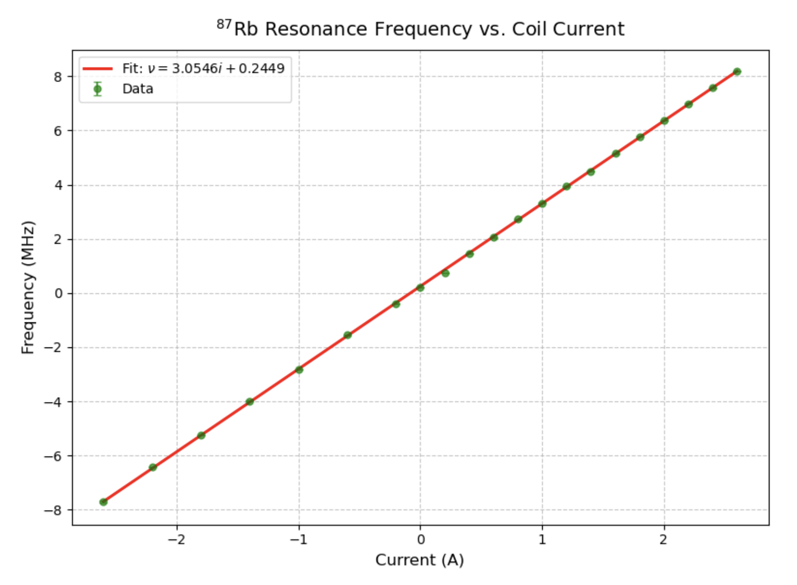
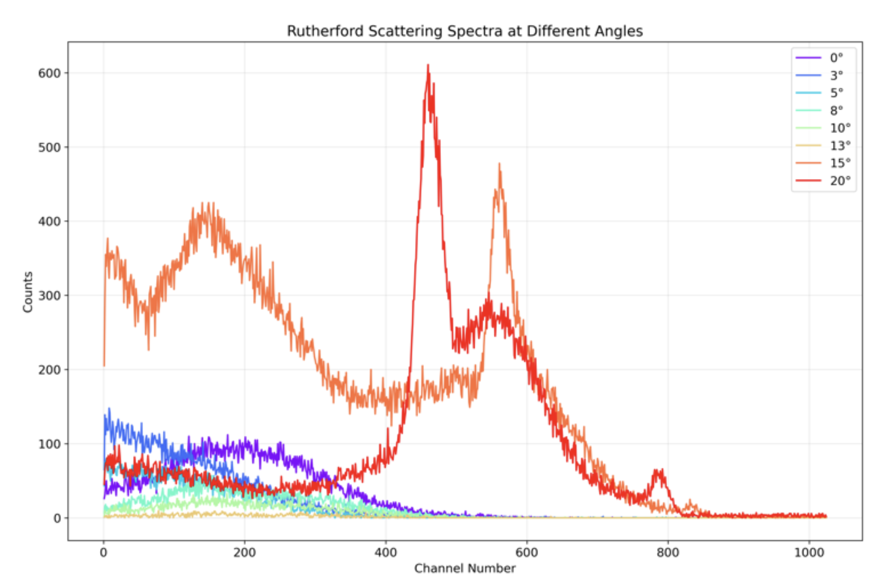

Undergraduate Research / Advanced Experimental Physics Projects
Advanced experimental physics projects
Four experiments from UC Berkeley's advanced physics laboratory (Physics 111B). Each combines a physical system with the full chain of data acquisition, curve fitting, and error analysis expected of graduate-level laboratory work. The sections below summarize the physics and the headline result of each.
Hall effect in a plasma
This experiment measured the Hall effect in a weakly ionized helium glow discharge and used it as a window onto the microscopic transport properties of the plasma. A discharge tube sat in a transverse magnetic field; the Hall voltage was read across one pair of probes and the axial voltage along another, while the gas pressure, discharge current, and field strength were varied independently. From the measured Hall field $E_H$, the analysis extracts the electron drift velocity, number density, collision frequency, momentum-transfer rate, and electron temperature, using the standard relations of classical plasma transport theory.
In the low-field regime, below roughly 300 G, the Hall field rose linearly with the applied field, confirming that the system sat in the collision-dominated, low-Hall-angle regime where this simple analysis applies. The drift velocities came out on the order of $10^5$ m/s and fell with increasing pressure, consistent with more frequent electron-neutral collisions impeding the drift, and the electron number densities were near $10^{15}\,\text{m}^{-3}$, typical for a helium glow discharge. The inferred electron temperatures, several hundred to about 1200 K, come out well below the values expected for a more energetic discharge; this most likely reflects the constant-cross-section assumption and the momentum-transfer method used to obtain them rather than a genuinely sub-thermal electron population, and it is best read as a limitation of the technique.

Optical pumping of rubidium
This experiment used optical pumping to measure the Zeeman splitting of the two stable isotopes of rubidium, 85Rb and 87Rb, and from that to determine their nuclear spins and the ambient magnetic field. Circularly polarized D1 light at 795 nm pumped atoms in a heated vapor cell into a dark state; a radio-frequency field driven at the Zeeman transition frequency disrupted the pumping, detected as a change in transmitted light. Using lock-in detection against a 60 Hz field modulation, the resonance frequency was recorded against Helmholtz-coil current across twenty-one points per isotope.
The resonance frequency varied linearly with applied field, as expected in the weak-field regime, and the slope of that line fixes the $g$-factor and hence the nuclear spin. The fits give nuclear spins of $I = 5/2$ for 85Rb and $I = 3/2$ for 87Rb, both matching the accepted values. A useful methodological point emerged in the error analysis: uncertainties taken from the width of the resonance figure produced a reduced chi-squared far above one, signalling that those bounds understated the true scatter. Re-estimating the error from the residual spread brought the reduced chi-squared near one, making the fit statistically self-consistent. The fit intercepts also yield an ambient field of a few tenths of a gauss, and modulation measurements place the optical pumping and relaxation timescales at roughly 100 ms.


CO2 laser
This experiment characterized a continuous-wave carbon-dioxide laser: its current-voltage behavior, spectral output, pressure dependence, and wavelength tuning with a diffraction grating. After the optical cavity was aligned with a visible helium-neon guide beam, the discharge was ignited and the laser brought to a stable output of about 2.4 W, and the effect of gas pressure and discharge current on its behavior was studied. The emission runs on the vibrational-rotational transitions of the CO2 molecule, with the population inversion established through energy transfer from nitrogen and the lower laser level emptied with the help of helium.
The current-voltage curves separated cleanly by pressure. At about 10 Torr the voltage across the tube fell steadily with increasing current, the signature of a stable glow discharge; at 13.5 Torr the voltage began to rise again past roughly 7 mA, pointing to a less stable and less efficient regime, and by 17 Torr the discharge would not hold steady at all. Spectrally, the laser ran dominantly on the P(20) line near 10.59 µm under standard conditions, exactly as the Boltzmann distribution of rotational populations predicts, and lowering the pressure to 13.5 Torr made the output hop between P(20) and P(22). The grating stage was the most challenging part of the experiment and, in the end, the most instructive: persistent vertical alignment problems meant the expected P-branch lines were never recovered, and a set of R-branch transitions between roughly 10.2 and 10.3 µm was observed instead. Comparison with published gain data confirms that mid-J R-lines can indeed sustain lasing, so the result is best read as an alignment and optical-feedback artifact rather than a claim that the R-branch out-gains the P-branch.
Rutherford scattering
This experiment measured the angular distribution of alpha particles scattered from a thin gold foil, reproducing the signature of Coulomb scattering from a compact nucleus. An Americium-241 source directed collimated alpha particles at the foil inside a vacuum chamber, and a silicon detector on a rotating arm recorded pulse-height spectra at scattering angles from 0 to 20 degrees. For each angle, a count rate was extracted by fitting the elastic peak, and the angular dependence was compared against the Rutherford prediction, which falls off as $\sin^{-4}(\theta/2)$.
The raw spectra show the expected behavior directly: the elastic peak is strong and sharp at small angles and becomes broader, weaker, and noisier as the angle increases, consistent with the steep drop in scattering probability the theory predicts. Across the mid-angle range, where the fits were most reliable, the count rate followed the predicted angular law with moderate correlation. Using the slope of that fit together with the foil parameters and an effective beam energy of roughly 3.8 MeV, corrected downward from the nominal source energy to account for energy loss in the source capsule and foil, gives a nuclear charge for gold of about $Z \approx 52$, against the accepted value of 79. The result lands in the right order of magnitude and confirms the angular trend, but the quantitative gap is real and reflects the experiment's sensitivity to source flux, solid-angle geometry, and background subtraction. Single-angle estimates of $Z$ scatter widely around this value and are best treated as a measure of that spread rather than as independent determinations.

Advanced-laboratory coursework at UC Berkeley (Physics 111B)
References
- A. C. Melissinos and J. Napolitano, Experiments in Modern Physics, 2nd ed. (Academic Press, 2003).
- E. Rutherford, “The scattering of α and β particles by matter and the structure of the atom,” Philos. Mag. 21, 669 (1911).
- A. Kastler, “Optical methods for studying Hertzian resonances,” Science 158, 214 (1967).
- N. Djeu, T. Kan, and G. J. Wolga, “Gain distribution, population densities, and rotational temperature in the CO2 laser,” IEEE J. Quantum Electron. 4, 783 (1968).